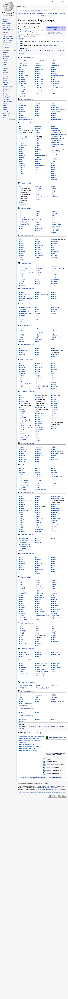

Введение в языки программирования
Лекция №1 курса "Разработка ПО" (ХНУРЭ)
Александр Коротких, alexkorotkikh.com
Языки программирования...
Тысячи их!

Более 700 наименованией знает Википедия
Больше 100 разных языков в репозиториях на Github'e
Зачем нам столько?
Производительность вычислений (performance)
vs
Производительность программистов (productivity)
Performance
- ASM, C, C++
- Hardware-specific
- Драйвера, embedded, Гугл
Дёшево, и дешевеет
Productivity
- Python, Ruby, Javascript
- Hardware-agnostic
- Практиечски всё остальное
Дорого, и дорожает